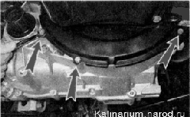
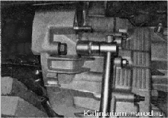
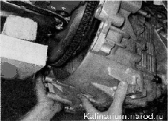

Снятие и установка коробки передачКоробка передач весит более 30 кг, поэтому работать следует с помощником либо, используя регулируемую подставку или подъемное устройство. Не снимайте оба привода одновременно либо, если это необходимо, устанавливайте вместо одного из них специальную оправку, препятствующую выпадению полуосевых шестерен из коробки дифференциала. Снятие 1. Снимаем брызговик двигателя или защиту картера (если установлены). 2. Сливаем масло из коробки передач. 3. Снимаем полку аккумуляторной батареи. 4. Снимаем воздушный фильтр. 5. Снимаем стартер. 6. Отсоединяем от коробки передач трос привода выключения сцепления. 7. Отсоединяем колодки жгутов проводов от выключателя фонарей заднего хода, датчика скорости автомобиля и соленоида блокировки передачи заднего хода. 8. Отсоединяем тягу привода механизма переключения передач от шарнира. 9. Отсоединяем реактивную тягу от картера коробки передач. 10. Ослабляем затяжку гайки крепления продольной растяжки к поперечному рычагу и отсоединяем кронштейн растяжки от кузова. Чтобы растяжка не мешала, отводим ее в сторону и закрепляем жгутом или проволокой. 11. Снимаем приводы передних колес 12. Ключом на 10 мм отворачиваем три болта крепления нижней крышки картера сцепления. 
13. Снимаем нижнюю крышку картера. 14. Устанавливаем под двигатель регулируемую подставку и снимаем левую и заднюю опоры силового агрегата Дальнейшую работу выполняем с помощником или устанавливаем под коробку передач регулируемую подставку. 15. Торцовым ключом на 19 мм отворачиваем три болта, а также одну гайку крепления коробки передач к двигателю. Верхний болт крепления коробки передач с правой стороны двигателя (при взгляде на него со стороны коробки передач) короче остальных. При снятии коробки передач не опирайте ее первичный вал на диафрагменную пружину сцепления, это может привести к повреждению последней. 16, Покачивая коробку передач из стороны в сторону, снимаем ее с направляющих втулок и аккуратно выводим первичный вал из отверстия ведомого диска и корзины сцепления. 17. Максимально отводим коробку передач от двигателя, наклоняем ее картером сцепления вниз и, проведя ее между двигателем и растяжкой передней подвески, аккуратно опускаем коробку передач на пол. Установка Устанавливаем коробку передач в обратной последовательности, предварительно нанеся пластичную смазку на шлицы первичного вала коробки. |